“In the course of evolution nature has gone to endless trouble to see that every individual is unlike every other individual.” — Aldous Huxley, Brave New World Revisited
Aligned LLMs quietly lose their expressive range: mode collapse narrows generation toward a small set of dominant responses. MODA (MOde-conditioned Diversity Alignment) is an online RL post-training method that conditions a single shared policy on abstract role tokens, treating each role as an agent that competes to explore a distinct, high-quality region of the response space. A quality-gated diversity reward shapes this competition during training. The result: broader, higher-quality exploration on demand, with a simple switch back to standard single-response behavior when diversity isn't needed.
Post-training alignment reliably improves helpfulness and safety — but it also collapses a model's output distribution onto a narrow "mode," suppressing many equally valid alternatives. That's a real cost in domains where multiple plausible answers are the point: scientific hypothesis generation, creative writing, and open-ended ideation all benefit from a policy that can surface several distinct, high-quality candidates rather than one safe favorite.
Inference-time tricks (resampling, seeded prompting, decoding heuristics) help a little, but they work against a policy that was trained to converge. MODA instead builds diversity into post-training itself, drawing on a multi-agent RL (MARL) view of alignment: treat each "mode" as a lightweight agent sharing one policy, and reward agents for finding complementary, high-quality regions of the response space rather than converging on the same one.
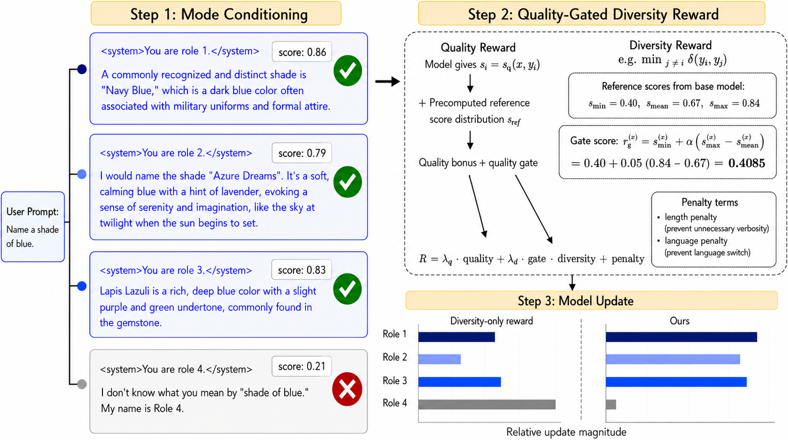
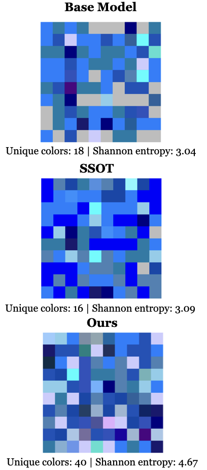
MODA elicits candidate responses under distinct role tokens (Step 1), scores each against a prompt-adaptive quality gate and rewards diversity only among gate-passing responses (Step 2), then updates the shared policy with GRPO using the resulting group-relative advantages (Step 3). On the right, 100 samples to "Name a shade of blue" show MODA covering far more of the color space than the base model or String-Seed-of-Thought.
A minimal system-prompt prefix — You are role i. — instantiates N abstract agents inside one shared policy. Numbered roles (rather than hand-crafted personas like "creative thinker") avoid baking in assumptions about which perspectives matter, letting specialization emerge from the reward alone.
Each response gets a quality score from a reward model, compared against a prompt-adaptive threshold computed from five reference samples of the frozen initial policy. Only responses that clear the gate earn credit for being semantically distinct from their nearest neighbor — preventing "diversity" from being gamed by irrelevant or malformed outputs.
Quality reward, gated diversity reward, and length/language penalties combine into one reward per response. GRPO turns the six role-conditioned responses per prompt into a single reward group, computing advantages without a separate value network.
Because the role token is just a prompt prefix, MODA supports two inference modes for free: supply role tokens and get a diverse candidate set; omit them and recover the base model's ordinary single-response behavior. Factual prompts ("What is Albert Einstein's birthday?") don't need five different answers — MODA doesn't force diversity where none is wanted.
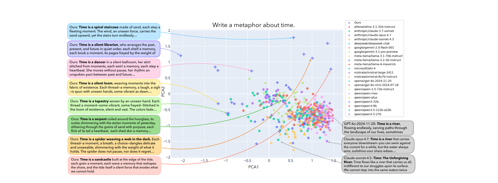
Sentence embeddings (reduced via PCA) of 20 responses each from 23 off-the-shelf models plus thinking-disabled MODA (top-p = 1.0, temperature = 1.0). Off-the-shelf models converge on a "time is a river" metaphor — GPT-4o-2024-11-20 ("Time is a river, flowing endlessly, carving paths through the landscape of our lives..."), Claude-opus-4.7 ("Time is a river that carries everyone downstream..."), and Claude-sonnet-4.5 ("Time: The Unforgiving River...") all land in the same cluster. MODA's responses spread across a much larger region of the embedding space, including a spiral staircase made of sand, a silent librarian who arranges past, present, and future, a dancer in a silent ballroom, a silent loom weaving moments into the fabric of existence, a serpent coiled around the hourglass, and a spider weaving a web in the dark.
Interestingly, although MODA only ever sees abstract numbered roles during training, roles sometimes develop consistent behavioral signatures at inference time — an emergent specialization the reward never explicitly asked for. For the prompt "Name one cocktail I can make with rum," most role-conditioned responses give a normal recipe, but one role spontaneously adopts a narrator persona:
MODA is evaluated on an 11-task suite: seven general-capability benchmarks (GSM8K, MMLU, GPQA, BoolQ, HellaSwag, TruthfulQA, IFEval) and four open-ended diversity applications (HypoBench, PreScience, NoveltyBench, and a held-out split of Infinite-Chat). We compare against two training-time baselines that jointly optimize quality and diversity — DARLING and DivPO — and an inference-time baseline, String Seed of Thought (SSoT).
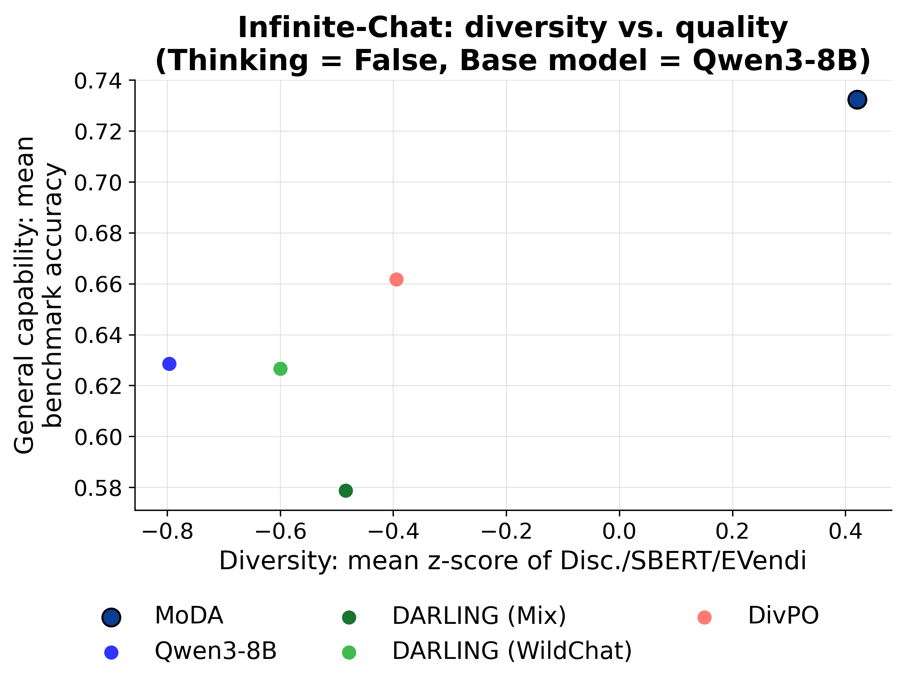
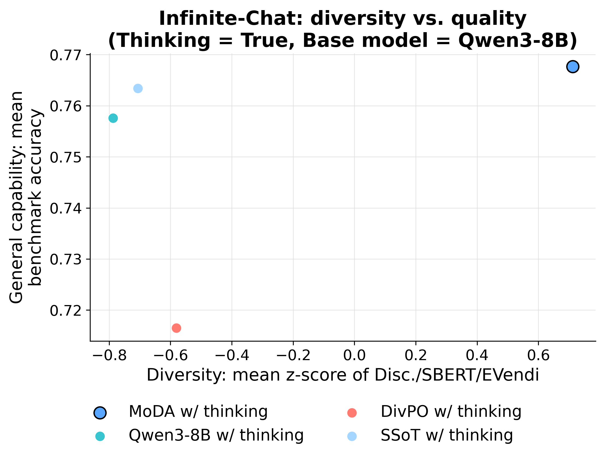
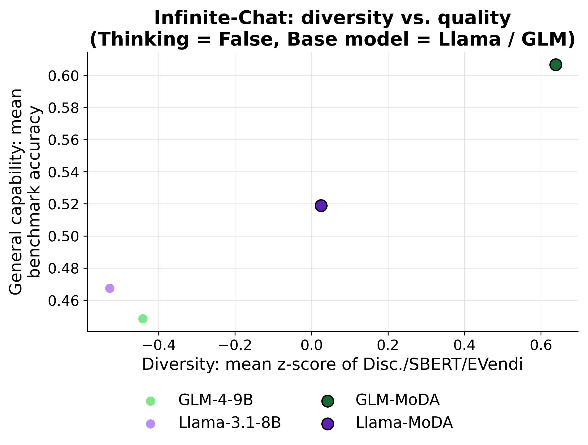
Diversity (x-axis: mean z-score of Discriminator/SBERT/E-Vendi on held-out Infinite-Chat) vs. general capability (y-axis: mean benchmark accuracy). Left to right: Qwen3-8B thinking disabled, Qwen3-8B thinking enabled, Llama-3.1-8B / GLM-4-9B thinking disabled. MODA Pareto-dominates all baselines across every setting, achieving higher diversity and quality simultaneously.
| Model | Infinite-Chat Disc. | Infinite-Chat SBERT | Infinite-Chat E-V | Avg. Disc. | Avg. SBERT | Avg. E-V |
|---|---|---|---|---|---|---|
| Qwen3-8B (base) | 0.400 | 0.132 | 1.83 | 0.427 | 0.164 | 2.01 |
| DARLING (Mixture) | 0.430 | 0.203 | 2.33 | 0.477 | 0.312 | 3.12 |
| DARLING (WildChat) | 0.416 | 0.185 | 2.15 | 0.439 | 0.229 | 2.45 |
| DivPO | 0.410 | 0.274 | 2.86 | 0.453 | 0.271 | 2.79 |
| MODA | 0.472 | 0.482 | 4.40 | 0.482 | 0.419 | 3.90 |
| Model | GSM8K | MMLU | GPQA | BoolQ | HellaSwag | TruthfulQA | IFEval | Avg. |
|---|---|---|---|---|---|---|---|---|
| Qwen3-8B (base) | 84.5 | 82.0 | 41.4 | 83.1 | 48.4 | 22.2 | 78.4 | 62.9 |
| DARLING (Mixture) | 63.5 | 63.0 | 34.3 | 76.7 | 62.2 | 52.4 | 53.0 | 57.9 |
| DARLING (WildChat) | 77.9 | 55.0 | 34.3 | 86.4 | 68.8 | 43.2 | 73.0 | 62.7 |
| DivPO | 80.5 | 81.0 | 40.4 | 83.5 | 62.8 | 37.7 | 77.3 | 66.2 |
| MODA | 86.7 | 81.0 | 52.0 | 84.8 | 73.4 | 57.9 | 76.9 | 73.2 |
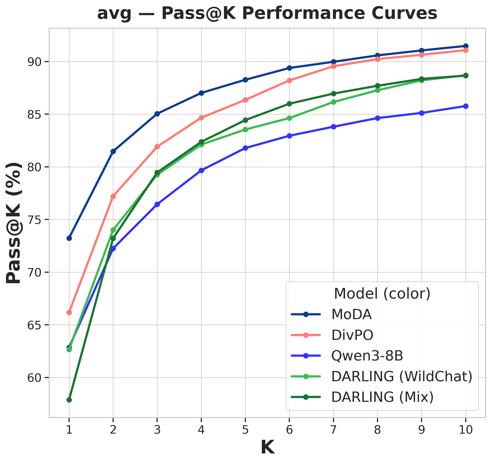
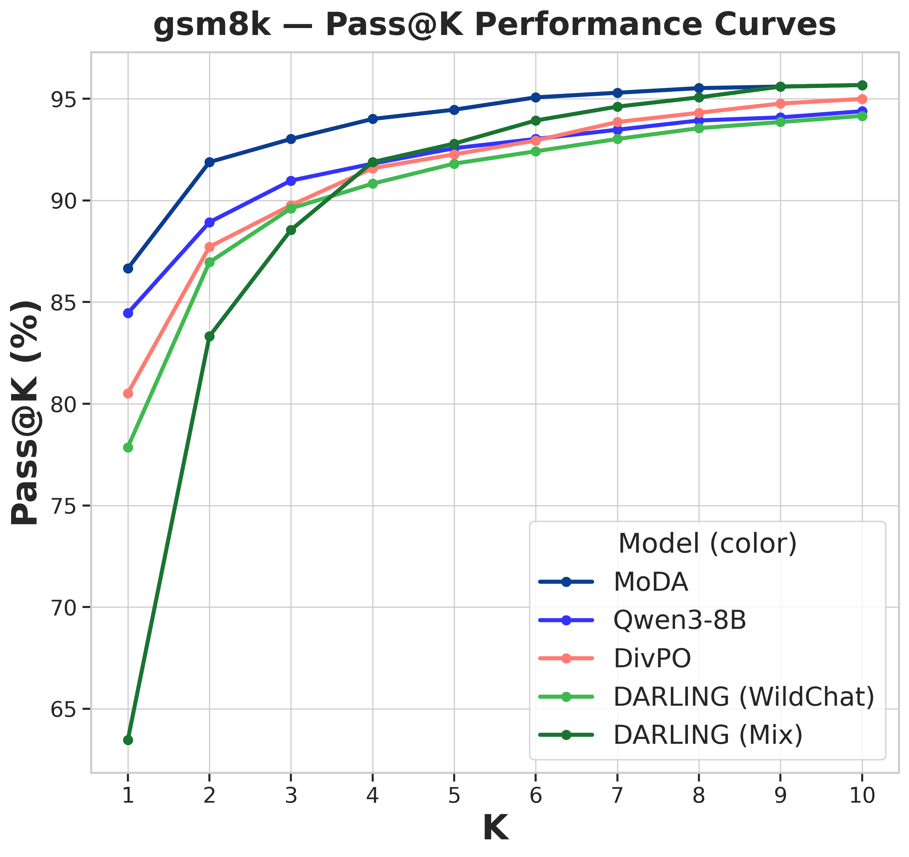
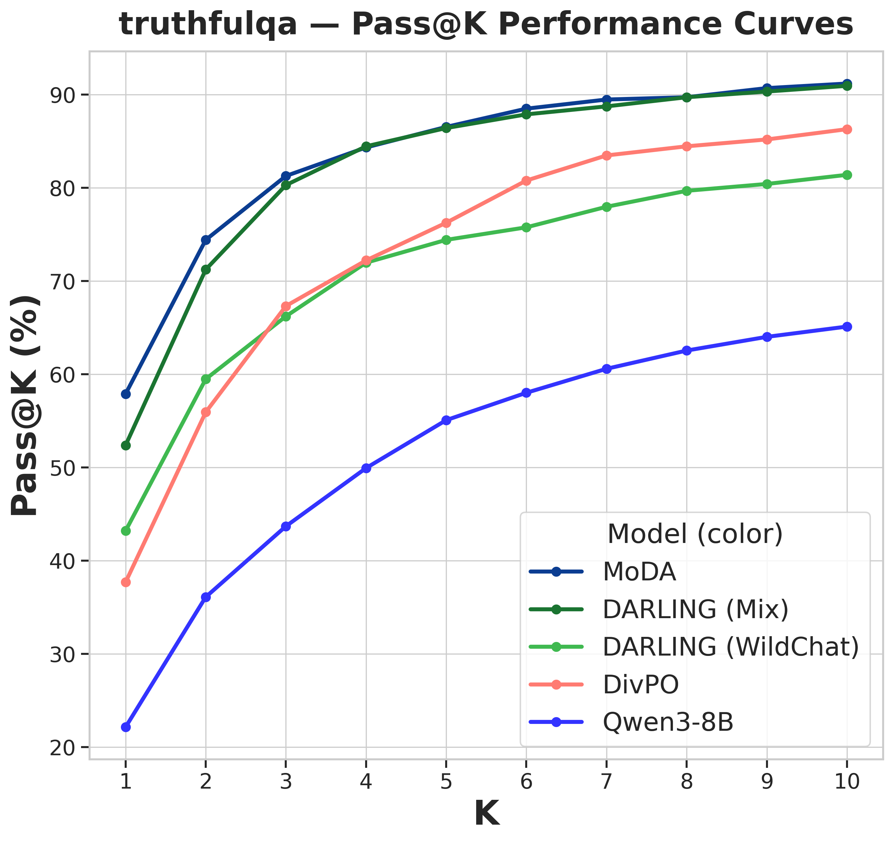
General capability retention, pass@k accuracy: Qwen3-8B base, thinking disabled, on the general capability suite average, GSM8K, and TruthfulQA.
Averaged over the four-domain diversity suite under the same thinking-disabled setting, MODA improves SBERT diversity by 155.5% and E-Vendi by 94.0% over the Qwen3-8B initial policy, while lifting average general-capability pass@1 by 10.3 percentage points over the initial policy and 7.0 points over the strongest DivPO baseline. With the Qwen3-8B base and thinking disabled, MODA matches or exceeds the base model on 5 of 7 general-capability benchmarks and posts the best score among all baselines on 4 of them. With the GLM-4-9B base, MODA improves average pass@1 by 15.8 percentage points, including a 3.89× relative improvement on GSM8K and a 2.37× relative improvement on MMLU.
| Ablation | Standard mode | Diverse mode | Disc. | SBERT | E-Vendi |
|---|---|---|---|---|---|
| Role-conditioned prompting (no training) | 62.9 | 56.6 | 0.403 | 0.145 | 1.90 |
| Quality only | 63.2 | 61.8 | 0.401 | 0.131 | 1.82 |
| Diversity only | 61.1 | 10.7 | 0.656 | 0.993 | 9.77 |
| Additive w=1 | 67.4 | 68.0 | 0.422 | 0.204 | 2.33 |
| Additive w=10 | 64.5 | 5.7 | 0.632 | 0.976 | 9.64 |
| Additive w=100 | 61.6 | 5.4 | 0.621 | 0.970 | 8.75 |
| Token-based roles | 69.7 | 67.9 | 0.419 | 0.197 | 2.04 |
| Crafted personas | 70.1 | 66.1 | 0.421 | 0.194 | 2.24 |
| Single role | 69.0 | 69.9 | 0.428 | 0.239 | 2.57 |
| Qwen3-8B (base) | 62.9 | — | 0.400 | 0.132 | 1.83 |
| MODA | 73.2 | 71.6 | 0.444 | 0.257 | 2.69 |
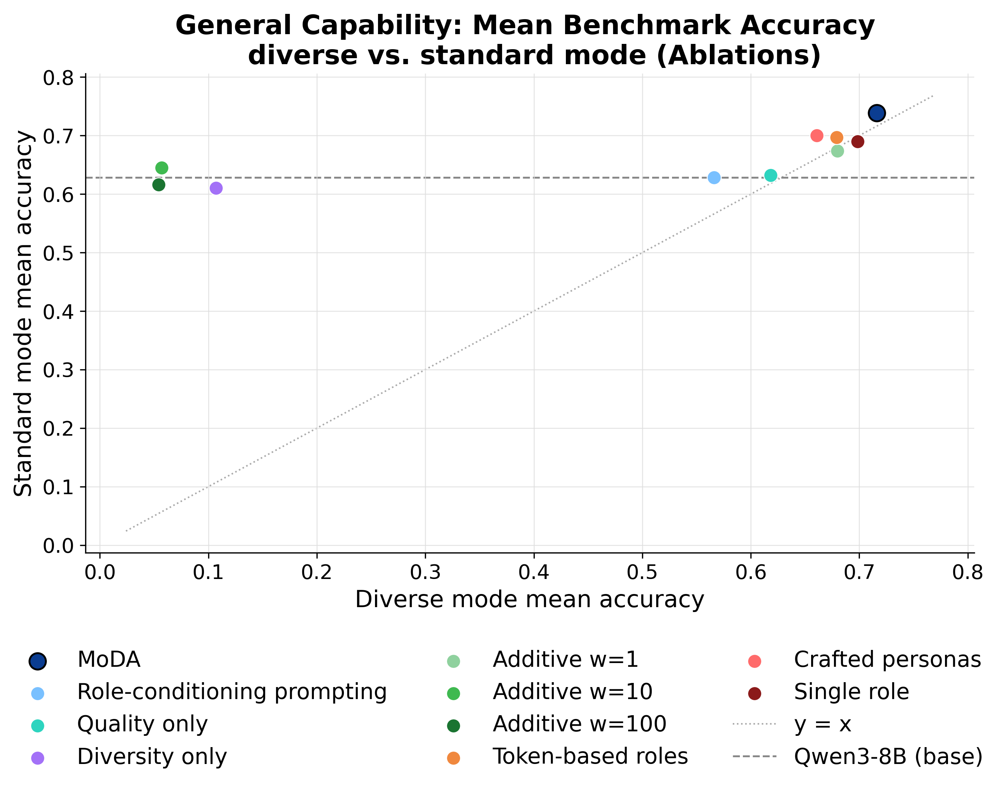
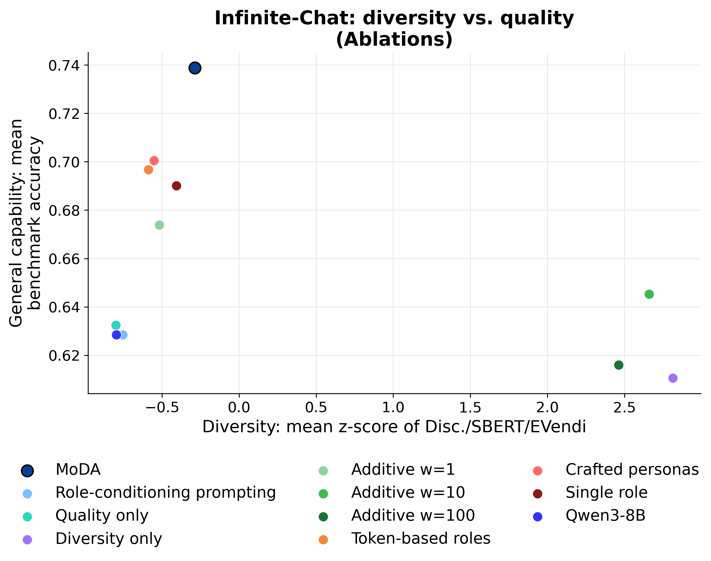
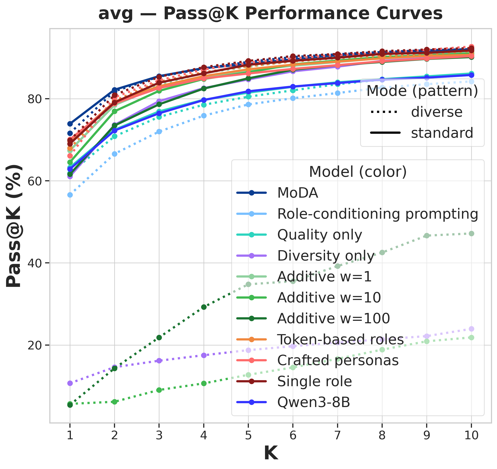
Ablation study: diversity-quality trade-off under diverse and standard decoding, and general-capability pass@k accuracy across ablation variants.